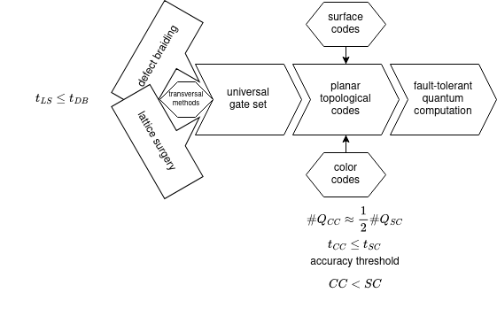
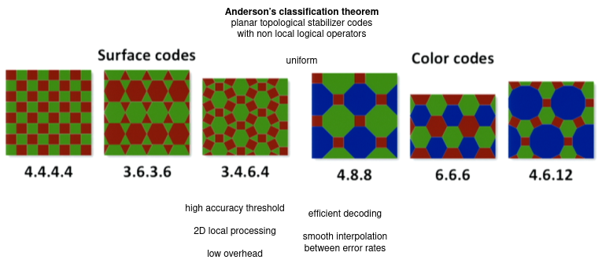
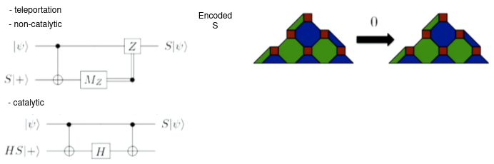

Tailoring quantum error correction to spin qubits
2023 - Hetényi & Wootton - IBM Zurich

## QEC **logical qubit**: qubit with arbitrarily suppressed error rates **quantum memory experiment**: logical qubit encoded in X_L or Z_L, left idling, stabilizers repeatedly measured, and then read out **code distance**: smallest number of independent errors that cannot be detected by stabilizer operators **decoder**: classical algorithm that uses all the syndromes to guess errors **fault tolerance**: decoder success rate increases with the number of qubits **threshold theorem**: threshold error rate p^th of the physical qubits depends on the error correction code, the decoding algorithm and the error model **Hamiltonian**: negative sum of all stabilizer operators. 2 degenerate ground state = +1 eigenstates maximum-likelihood decoder is optimal but exponential minimum-weight perfect matching (MWPM) is almost linear --- ## Noise --- ## Error-threshold --- ## Measurement time vs fidelity --- ## Circuit-level noise --- ## Error-threshold

